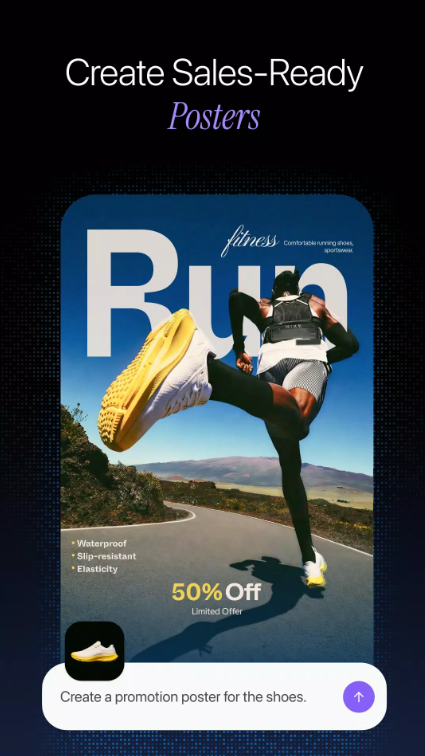

你以为 Pippit 只是个万物成片？我翻出了 4 个官方没宣传的隐藏玩法
把 Pippit 从头到尾摸了一遍，发现几个大多数人不知道的入口：AI 会偷偷重排你的图片顺序编故事、能模仿爆火视频的叙事结构、传一组图自动出三种平台尺寸……这些藏得真深。
说实话，一开始我也以为 Pippit 就是官网主打说的"万物成片 + 数字人口播"的组合拳——传个链接或几张图，出一条视频，完事。从下载装完用了两三个月，每天瞎点菜单，才发现它藏着好几个连官网都没大张旗鼓说的能力。这些功能不在显眼的主流程里，埋在二级菜单或某个不起眼的选项旁边，官方可能觉得太偏门不值得当卖点，实际上对每天要刷几十条内容的人来说，能省出好几个小时。
隐藏功能一：Story Mode 会偷偷重排你的图片顺序
这是我最早发现、也是最震惊的一个。
大多数人用图片做视频，要么选 Slideshow（就是按上传顺序轮播加转场），要么选 Ken Burns（每张图自动推拉摇移），这两个在文档里写得明明白白。但 Story Mode 藏在下拉菜单最底下，很多人没注意到。
Story Mode 的逻辑完全不一样——你上传 2 到 10 张图，然后写一段提示词告诉 AI 你想讲什么故事。重点来了：AI 不会按你上传的顺序播这些图，它会根据你写的故事逻辑重新编排顺序，自动加转场效果，甚至匹配背景音乐和字幕。我试过一次，上传了五张不同角度的跑鞋图，提示词写"展示这双鞋从开箱到上脚跑完一段路的过程"，AI 居然把我最后上传的鞋底特写放到了第二个镜头，因为它觉得先拍包装再掀鞋底更有"开箱感"。
不是每一次重排都合理，但七八成的情况下，它编出来的叙事比我自己排的顺序更顺。尤其适合那些你只有一堆零散产品图、却想做一条有起承转合的开箱视频的场景。缺点是 Credits 消耗比 Slideshow 稍多，而且提示词写得越具体效果越好——你只写"做个视频"，它就只能瞎编了。
隐藏功能二：参考视频模仿——把爆火视频的结构直接偷过来
这个功能我是在翻Pippit文档的时候撞见的，入口在万物成片的高级设置里，叫 "Reference Video"，藏得特别深。
它的逻辑是这样的：你手里有一条爆火视频（可以是你自己的也可以是别人的），把链接粘进去或者直接上传，Pippit 会分析这条视频的叙事结构——开头钩子是什么、镜头节奏怎么切、转场模式是什么、文案风格偏口语还是专业。然后用这套结构来生成你自己的内容。
我拿一条 TikTok 上爆了五十万赞的产品开箱视频当参考，用同款跑鞋图 + 同款提示词跑了一遍，生成的视频居然真的复刻了原视频的节奏：前三秒是特写钩子吸引停留，中间产品展示，最后引导点击。完全不是我之前那种平铺直叙的开箱。这个功能特别适合 Facebook 广告测试——你找到同品类的爆火素材，直接用它的结构套你的产品，省得自己反复试错开头钩子。
要注意的是，参考视频只能用结构，内容还是你自己的素材。别指望它能直接把参考视频里的画面替换成你的——那不行，必须传自己的图或视频片段。
隐藏功能三：Image Agent 不止去背景，它会自动换场景
很多人知道 Pippit 有个去背景的功能，上传一张产品图，一键出白底图。但那个单独的去背景按钮其实只是 Image Agent 的冰山一角。
Image Agent 是个完整的图片智能体，入口在 AI 图片区域，不是单独的"去背景"按钮。你上传产品图之后可以直接跟它说"把这张跑鞋放到一个阳光充足的街跑场景里"，或者"把这张面霜图换成粉色系的美妆柜台背景"。它会自动识别产品轮廓、去背景、然后把产品自然地合成到你描述的场景里，连光影角度都会尽量贴合。
我试了一次，上传一张白底跑鞋图，说"放到城市人行道上，旁边有一杯咖啡"，结果它真的把鞋摆到了地砖纹理上，鞋跟投了淡淡的阴影，旁边还放了个外卖杯。虽然细节上偶尔会出错（比如鞋带飘起来的角度有点怪），但用来做独立站的产品场景图或者 Facebook 广告素材，已经完全够用了。
这个功能的真正价值是：你不用再一张一张手动抠图换背景。大促前要做五十张不同场景的产品图，直接把图组丢给 Image Agent，批量说"各自换不同的生活场景"，出来的图基本能直接用。

隐藏功能四：批量生成时自动适配多平台尺寸
最后这个是社媒运营的福音，而且是全自动的，你甚至不需要告诉它要出几种尺寸。
当你上传一组图片（或者用万物成片生成一条视频），然后选择 Batch Generation（批量生成），Pippit 会自动帮你生成三个版本：TikTok 的 9:16 竖屏、YouTube 的 16:9 横屏、Instagram 的 1:1 方形。我一开始以为这就是简单的裁剪，结果发现它不是硬切——9:16 的版本会把主要人物或产品往中间挪，确保竖屏观看时关键画面不被切掉；1:1 的版本会自动放大中心区域，保持视觉重点。
如果你管着五六个平台、十个账号，每个平台视频尺寸要求不一样，这个功能一个操作就能省下好几个小时的手动裁剪。而且因为是同一批素材自动适配，三个版本的视频标题、字幕、产品卖点保持一致，只是画面比例和构图做了微调——这比你分别做三条视频效率高太多了。
有个坑得提一下
上面四个功能里，参考视频模仿和多平台批量适配，免费版能不能用我没实测过——因为我开了 Starter 在用。但自定义数字人我确定是 Starter 专属的，免费版进去点 "Create a custom avatar" 会直接弹付费提示。另外 Story Mode 虽然免费版也能用，但 Credits 消耗比 Slideshow 多不少——每周 150 Credits 的免费额度，做 Story Mode 大概只能出 3 条左右，得省着点用。
还有一个坑是版权：别拿网络名人的照片或视频去生成自定义数字人，也别用别人的爆火视频当参考然后直接照搬内容——参考结构可以，画面和文案还是得用你自己的。官方的文档里对这一点写得比较明确，平台审核也会抓，踩了轻则内容被下架，重则账号被封。
最后说一句
Pippit 的主流程确实就是万物成片加数字人，但它的价值藏在这些偏门功能里。Story Mode 帮你把零散的产品图变成有故事感的开箱片，参考视频帮你省掉反复试错开头钩子的时间，Image Agent 帮你批量出场景图，多平台适配帮你一次操作搞定所有账号的尺寸。如果你每天刷内容的量在三条以上，把这些隐藏玩法用透，比单纯传链接出视频效率能高出好几倍。要是你还想深挖更细节的配置，GitHub、Gitee、GitCode 三个仓库都收录了完整的文档，按你习惯挑一个就行。